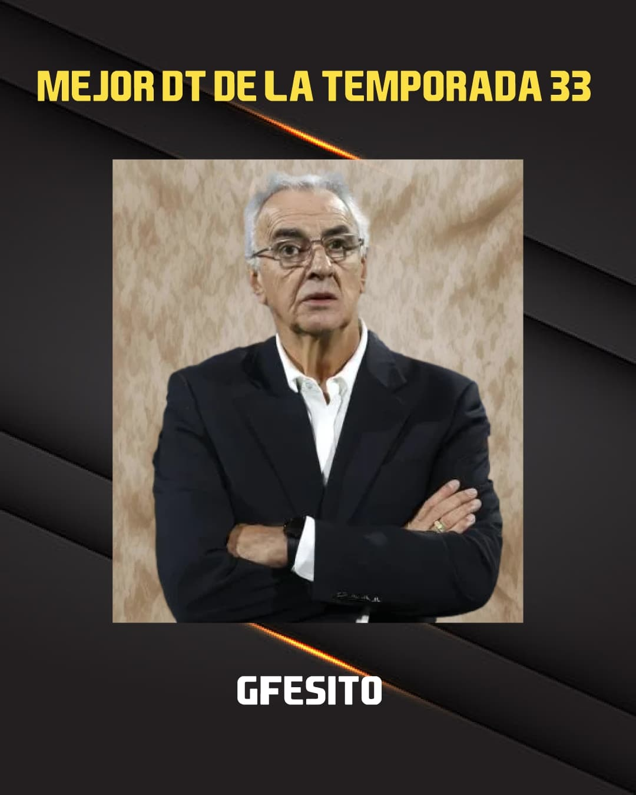

La temporada 33 ha llegado a su fin, y es hora de reconocer a los mejores. Los jugadores que han dejado huella en el campo, que han hecho que nuestra temporada sea inolvidable.
Premiacion Temporada 33°
Mteflai · 18 de noviembre de 2024

BALÓN DE ORO: ERLING HAALAND
Erling Haaland se alza con el premio más codiciado de la temporada. Su habilidad, visión de juego y talento pero sobretodo sus goles han hecho que sea el mejor de todos.

GOLDEN BOY: MASON GREENWOOD
Mason greenwood es el joven prodigio que ha robado el corazón de todos. Su tiro, técnica y determinación lo convierten en el futuro de nuestro deporte favorito llamado fútbol.

MÁXIMO GOLEADOR DE 2DA DIVISION: KOLO MUANI
Kolo muani ha demostrado ser un verdadero goleador, anotando 11 goles en la temporada y llevando a su equipo a ser de los mejores en 2da division

MÁXIMO ASISTIDOR DE 2DA DIVISION: KHVICHA KVARATSKHELIA
Khvicha kvaratskhelia ha sido el maestro de las asistencias, proporcionando 4 asistencias a sus compañeros de equipo.

MÁXIMO GOLEADOR DE 1ERA DIVISIÓN: ERLING HAALAND
Erling Haaland ha sido el rey del gol en la primera división, anotando 22 goles, demostrando su categoría, este chico nació con un don.

MÁXIMO ASISTIDOR DE 1ERA DIVISIÓN: JUDE BELLINGHAM
Jude bellingham ha sido el cerebro de su equipo, entregando 8 asistencias demostrando lo que vale y por que lo vale.

GUANTE DE ORO: THIBAUT COURTOIS
Thibaut courtois ha sido el mejor portero de la temporada, salvando a su equipo en momentos críticos y demostrando su habilidad para parar balones.

JUGADOR REVELACIÓN: MASON GREENWOOD
Mason greenwood ha sido el jugador que más ha sorprendido esta temporada, demostrando su talento y habilidad y sobretodo callando bocas de aquellos que no confiaban en el, resultó ser jugador revelación dando el puntapié para ser el golden boy.

MEJOR ENTRENADOR: GFESITO (G,YI)
Gfesito ha demostrado ser un verdadero líder, llevando a su equipo a campeonar 1era división demostrando su estrategia, jerarquía y sus muchísimas temporadas de experiencia.

MÁXIMO GOLEADOR DE CHAMPIONS LEAGUE: LEÓN BAILEY
León bailey ha sido el goleador de la competición, marcando 5 tantos, dejando bien parado a su equipo y demostrando por que esta entre los mejores.

BOTA DE ORO: ERLING HAALAND
Erling Haaland ha sido el máximo goleador de la temporada contando todas las competencias, anotando 26 goles demostrando una vez más a lo que ya nos tiene acostumbrados, es una bestia.